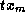
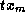

Common Lisp the Language, 2nd Edition

Scanners create series outputs based on non-series inputs. Either they
operate based on some formula (for example, scanning a range of integers) or they
enumerate the elements in an aggregate data structure (for example, scanning the
elements in a list or array).
[Function]
scan-range &key (:start 0) (:by 1) (:type 'number):upto :below :downto :above :length
The function scan-range returns a series of numbers starting with the :start argument (default integer 0) and counting up by the :by argument (default integer 1). The :type argument (default number) is a type specifier indicating the type of numbers in the series produced. The :type argument must be a (not necessarily proper) subtype of number. The :start and :by arguments must be of that type.
One of the last five arguments may be used to specify the kind of end test to be used; these are called termination arguments. If :upto is specified, counting continues only so long as the numbers generated are less than or equal to :upto. If :below is specified, counting continues only so long as the numbers generated are less than :below. If :downto is specified, counting continues only so long as the numbers generated are greater than or equal to :downto. If :above is specified, counting continues only so long as the numbers generated are greater than :above. If :length is specified, it must be a non-negative integer and the output series has this length.
If none of the termination arguments are specified, the output has unbounded length. If more than one termination argument is specified, it is an error.
(scan-range :upto 4) => #Z(0 1 2 3 4) (scan-range :from 1 :by -1 :above -4) => #Z(1 0 -1 -2 -3) (scan-range :from .5 :by .1 :type 'float) => #Z(.5 .6 .7 ...) (scan-range) => #Z(0 1 2 3 4 5 6 ...)
[Function]
scan sequence
scan type sequence
scan returns a series containing the elements of sequence in order. The type argument is a type specifier indicating the type of sequence to be scanned; it must be a (not necessarily proper) subtype of sequence. If type is omitted, it defaults to list. (This function exhibits an argument pattern that is unusual for Common Lisp: an ``optional'' argument preceding a required argument. This pattern cannot be expressed in the usual manner with &optional. It is indicated above by two definition lines, showing the two possible argument patterns.)
If the sequence is a list, it must be a proper list ending in nil. Scanning is significantly more efficient if it can be determined at compile time whether type is a subtype of list or vector and for vectors what the length of the vector is.
(scan '(a b c)) => #Z(a b c) (scan 'string "BAR") => #Z(#\B #\A #\R)
[Function]
scan-sublists list
scan-sublists returns a series containing the successive sublists of list. The list must be a proper list ending in nil.
(scan-sublists '(a b c)) => #Z((a b c) (b c) (c))
[Function]
scan-multiple type first-sequence &rest more-sequences
Several sequences can be scanned at once by using several calls on scan. Each call on scan will test to see when its sequence runs out of elements and execution will stop as soon as any of the sequences are exhausted. Although very robust, this approach to scanning can be inefficient. In situations where it is known in advance which sequence is the shortest, scan-multiple can be used to obtain the same results more rapidly.
scan-multiple is similar to scan except that several sequences can be scanned at once. If there are n sequence inputs, scan-multiple returns n series containing the elements of these sequences. It must be the case that none of the sequence inputs is shorter than the first sequence. All of the output series are the same length as the first input sequence. Extra elements in the other input sequences are ignored. Using scan-multiple is more efficient than using multiple instances of scan, because scan-multiple only has to check for the first input running out of elements.
If type is of the form (values  ... ), then
there must be m sequence inputs and the ith sequence must have type
... ), then
there must be m sequence inputs and the ith sequence must have type
 . Otherwise there can be any number of sequence inputs, each of which
must have type type.
. Otherwise there can be any number of sequence inputs, each of which
must have type type.
(multiple-value-bind (data weights)
(scan-multiple 'list '(1 6 3 2 8) '(2 3 3 3 2))
(collect (map-fn t #'* data weights)))
=> (2 18 9 6 16)
[Function]
scan-lists-of-lists lists-of-lists &optional leaf-test
scan-lists-of-lists-fringe lists-of-lists &optional leaf-test
The argument lists-of-lists is viewed as a tree where each internal node is a non-empty list and the elements of the list are the children of the node. scan-lists-of-lists and scan-lists-of-lists-fringe each scan lists-of-lists in preorder and return a series of its nodes. scan-lists-of-lists returns every node in the tree. scan-lists-of-lists-fringe returns only the leaf nodes.
The scan proceeds as follows. The argument lists-of-lists can be any Lisp object. If lists-of-lists is an atom or satisfies the predicate leaf-test (if present), it is a leaf node. (The predicate can count on being applied only to conses.) Otherwise, lists-of-lists is a (not necessarily proper) list. The first element of lists-of-lists is recursively scanned in full, followed by the second and so on until a non-cons cdr is encountered. Whether or not this final cdr is nil, it is ignored.
(scan-lists-of-lists '((2) (nil)))
=> #Z(((2) (nil)) (2) 2 (nil) nil)
(scan-lists-of-lists-fringe '((2) (nil))) => #Z(2 nil)
(scan-lists-of-lists-fringe '((2) (nil))
#'(lambda (e) (numberp (car e))))
=> #Z((2) nil)
[Function]
scan-alist a-list &optional (test #'eql)
scan-plist plist
scan-hash table
When given an association list, a property list, or a hash table
(respectively), each of these functions produces two outputs: a series of keys
K and a series of the corresponding values V. Each key in the
input appears exactly once in the output, even if it appears more than once
in the input. (The test argument of scan-alist specifies the
equality test between keys; it defaults to eql.)
The two outputs have the same length. Each
V is the value returned by the appropriate accessing function
(cdr of assoc, getf, or gethash, respectively)
when given K. scan-alist and scan-plist scan keys
in the order
they appear in the underlying structure. scan-hash scans keys in no
particular order.
is the value returned by the appropriate accessing function
(cdr of assoc, getf, or gethash, respectively)
when given K. scan-alist and scan-plist scan keys
in the order
they appear in the underlying structure. scan-hash scans keys in no
particular order.
(scan-plist '(a 1 b 3)) => #Z(a b) and #Z(1 3) (scan-alist '((a . 1) nil (a . 3) (b . 2))) => #Z(a b) and #Z(1 2)
[Function]
scan-symbols &optional (package *package*)
scan-symbols returns a series, in no particular order, and possibly containing duplicates, of the symbols accessible in package (which defaults to the current package).
[Function]
scan-file file-name &optional (reader #'read)
scan-file opens the file named by the string file-name and applies the function reader to it repeatedly until the end of the file is reached. Reader must accept the standard input function arguments input-stream, eof-error-p, and eof-value as its arguments. (For instance, reader can be read, read-preserving-white-space, read-line, or read-char.) If omitted, reader defaults to read. scan-file returns a series of the values returned by reader, up to but not including the value returned when the end of the file is reached. The file is correctly closed, even if an abort occurs.
[Function]
scan-fn type init step &optional test
The higher-order function scan-fn supports the general concept of
scanning. The type argument is a type specifier indicating
the type of values returned by init and step. The values
type specifier can be used for this argument
to indicate multiple types; however, type cannot
indicate zero values. If type indicates m types
 ,
then scan-fn returns m series
T1, ..., Tm, where Ti has
the type (series ).
The arguments init, step, and test are functions.
,
then scan-fn returns m series
T1, ..., Tm, where Ti has
the type (series ).
The arguments init, step, and test are functions.
The init must be of type
(function () (values ...  )).
)).
The step must be of type
(function ( ... ) (values ... )).
The test (if present) must be of type
(function ( ... ) t).
The elements of the Ti are computed as follows:
(values T1... Tm
... Tm
The outputs all have the same length. If there is no test, the outputs have unbounded length. If there is a test, the outputs consist of the elements up to, but not including, the first elements (with index j, say) for which the following termination test is not nil.
(funcall test T1
It is guaranteed that step will not be applied to the elements that pass this termination test.
If init, step, or test has side effects when invoked, it can count on being called in the order indicated by the equations above, with test called just before step on each cycle. However, given the lazy evaluation nature of series, these functions will not be called until their outputs are actually used (if ever). In addition, no assumptions can be made about the relative order of evaluation of these calls with regard to execution in other parts of a given series expression. The first example below scans down a list stepping two elements at a time. The second example generates two unbounded series: the integers counting up from 1 and the sequence of partial sums of the first i integers.
(scan-fn t #'(lambda () '(a b c d)) #'cddr #'null)
=> #Z((a b c d) (c d))
(scan-fn '(values integer integer)
#'(lambda () (values 1 0))
#'(lambda (i sum) (values (+ i 1) (+ sum i))))
=> #Z(1 2 3 4 ...) and #Z(0 1 3 6 ...)
[Function]
scan-fn-inclusive type init step test
The higher-order function scan-fn-inclusive is the same as
scan-fn except that the first set of elements for which test
returns a non-null value is included in the output. As with
scan-fn, it is guaranteed that step will not be applied to the
elements for which test is non-null.